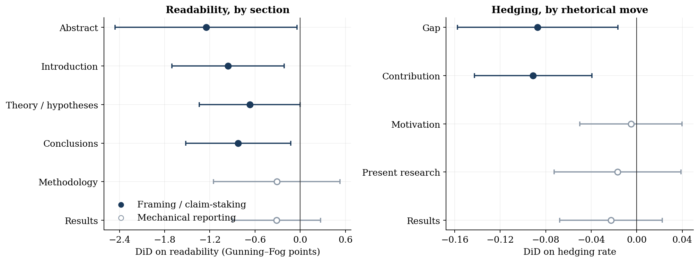
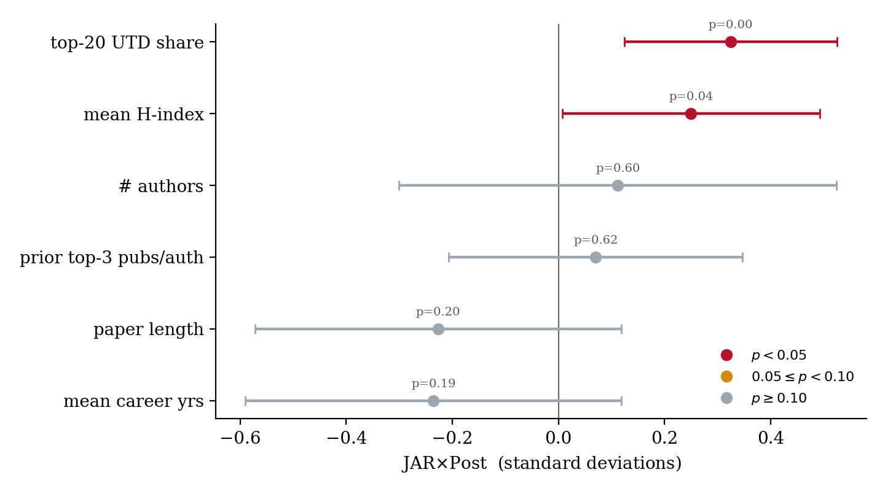

Abstract
We examine what happens to research when a journal requires authors to document their data and share the code that builds their samples. Beginning January 1, 2015, the Journal of Accounting Research (JAR) imposed such a rule on all empirical submissions while its closest competitors did not. We compare roughly 4,600 articles across six journals before and after the mandate.
Consistent with disclosure disciplining authors, post-mandate JAR abstracts are about one Gunning–Fog grade more readable—roughly one-third of a standard deviation—and papers stake fewer hedged claims and report more completely. The hedging decline is concentrated in contribution language among papers with the weakest headline evidence. Consistent with the mandate re-sorting who submits, JAR shifts toward more novel work by a more elite author pool, and its papers are cited less in raw counts but by more prominent outlets. The writing effects are absent from exempt theory papers and reappear when a second journal adopts its own mandate. Overall, opening the research pipeline changes not just what can be checked and replicated, but what gets written and who publishes where.
Key Findings
Behavioral margin: how a given author writes
Post-mandate JAR abstracts fall by about 1.3 Fog points (Δ ≈ −1.26)—more readable prose—and introduction hedging declines (Δ ≈ −0.017). Put differently, authors write more plainly and stake fewer qualified claims where they frame and interpret results. The same papers also report fewer headline results and surround each claim with more supporting coefficients. We do not, however, find much evidence that reported test statistics pull away from the just-significant region.
Market margin: who submits and what gets placed
Measured novelty rises at the journal level (intro-document novelty Δ ≈ +0.011). Once we hold author identity fixed, the novelty change is essentially zero—consistent with selection rather than a given author writing more original papers. Along the same margin, post-mandate JAR authors are about 0.3 SD more likely to be at a top-20 UTD department and carry a higher mean h-index (≈0.25 SD).
Citation composition, not just citation counts
Log citations fall after the mandate (Δ ≈ −0.14). The citations that remain come from more prominent outlets—including a larger share from premier business journals outside accounting. Put differently, the audience shrinks while the marginal reader is drawn from higher-status venues.
Placebos that separate behavior from composition
Writing effects concentrate in framing sections (abstract, introduction, contribution moves) and are weak in mechanical methods and results sections. They are absent for theory papers exempt from the mandate, and they reappear when Management Science adopts a comparable data-and-code rule—patterns a pure compositional story would not anticipate.

Figure. Event-study estimates around the 2015 submission cutoff. Post-mandate JAR papers become more novel and more readable, hedge less in the introduction, and receive fewer citations in raw counts. Pre-period estimates are normalized at t = −1.

Figure. Where the writing changes. Fog declines and hedging declines concentrate in framing and claim-staking text—abstracts, introductions, and contribution and gap moves—rather than in mechanical methodology and results sections.

Figure. Author-pool composition. Relative to controls, post-mandate JAR authors shift toward top-20 UTD departments and higher mean h-indices; team size, prior top-3 publications, paper length, and career years move little.
Research Contribution
Most of what we know about transparency mandates concerns whether published results can be replicated. Far less is understood about how the anticipation of disclosure changes the research that gets written and the population of researchers who write it. In this paper, we exploit JAR’s 2015 data- and code-sharing policy—adopted unilaterally, on a clean date, while peer accounting journals did not follow—to examine that supply-side question.
Our study offers several contributions. First and foremost, we show that a self-certified disclosure rule without an in-house data editor still moves both a behavioral margin—how a given author writes and reports—and a market margin—which authors and projects arrive. Second, we provide a portable template for separating those margins when a single outlet changes disclosure rules: author fixed effects, a second treated journal, within-field theory placebos, and never-treated field benchmarks. Third, we treat the research paper as a disclosure document and measure prose, novelty, reported inference, and citation composition with text-as-data tools. Overall, these results suggest that opening the research pipeline reshapes the market for ideas, not only post-publication auditability.